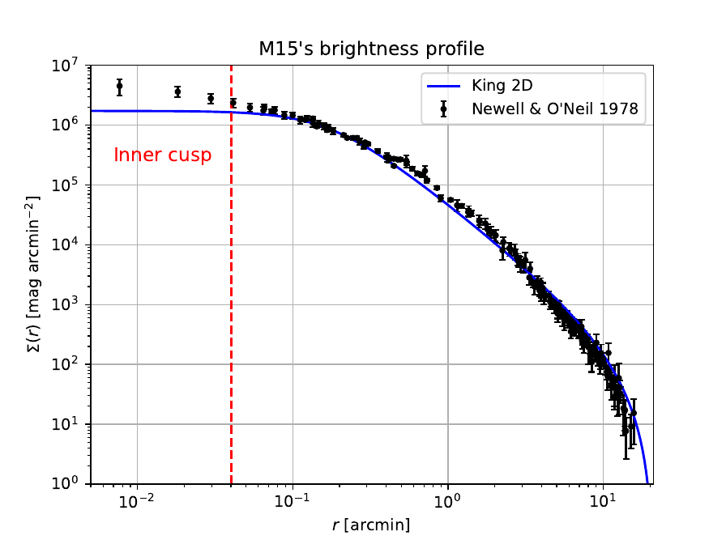
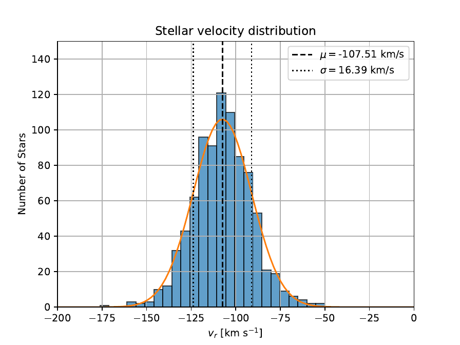
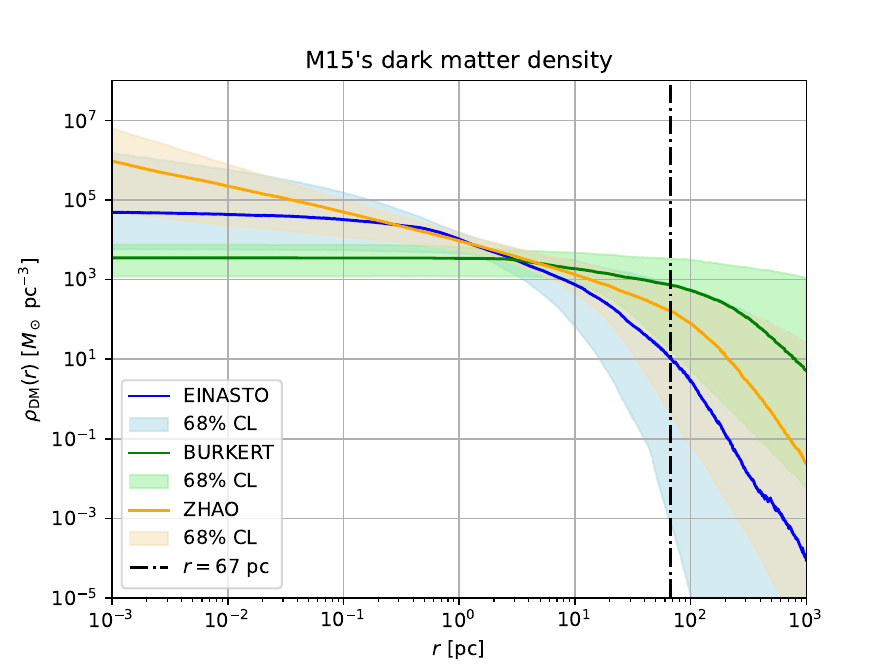
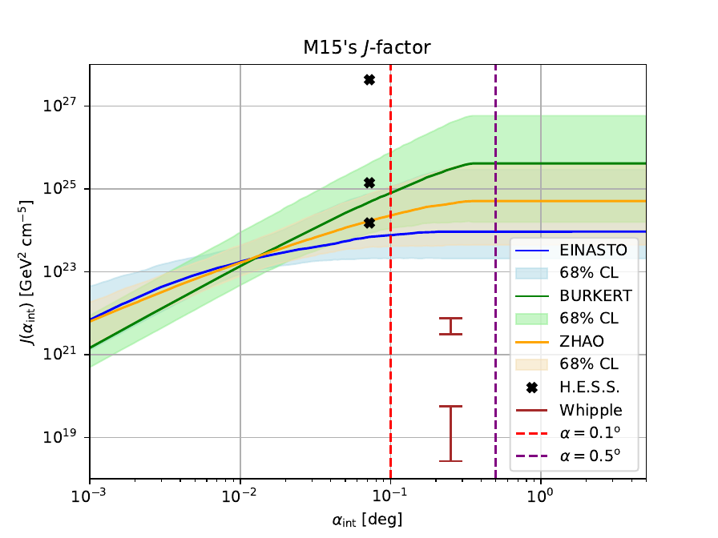

Master’s thesis · M.Sc. Nuclear & Particle Physics · University of Oslo · Spring 2025
Analysis of the dark matter density profile and J-factor of the globular cluster M15 for indirect dark matter searches with IACTs
Abstract. One of the most promising strategies for indirect dark matter (DM) detection is to observe regions with a high DM concentration and search for the products of DM self-annihilation or decay — in particular very-high-energy (VHE) gamma rays. The expected gamma-ray flux from a given target is proportional to the astrophysical $J$-factor, defined as the line-of-sight integral of the squared DM density over the observational solid angle. In this thesis, the DM density profile and the integrated $J$-factor of the globular cluster M15 (NGC 7078) are computed by performing a Markov Chain Monte Carlo (MCMC) Jeans analysis of its stellar kinematics. Three DM density profiles are considered: the cored Burkert profile and the cuspy Einasto and Zhao–Hernquist profiles. A model-selection test based on the reduced $\chi^2$ posteriors favours the cuspy profiles. Across all three profiles, the angular extent of M15’s DM halo exceeds the MAGIC point spread function, meaning that M15 cannot be treated as a point source. For an integration angle of $0.5^\circ$ the favoured $J$-factor range is $\log_{10}(J/\text{GeV}^2\text{cm}^{-5})\in[23.4,\,25.7]$.
1. Scientific context
The existence of dark matter is strongly supported by a wide range of astrophysical evidence: galaxy rotation curves, gravitational lensing, the CMB power spectrum, and large-scale structure. DM constitutes ∼27% of the total energy density of the Universe and ∼85% of its matter content, yet its particle nature remains unknown. Leading candidates include weakly interacting massive particles (WIMPs), which can self-annihilate into Standard Model particles. The resulting VHE gamma rays can be detected by Imaging Atmospheric Cherenkov Telescopes (IACTs) such as MAGIC.
The expected differential gamma-ray flux from DM annihilation is
where $dN_\gamma/dE$ is the gamma-ray spectrum per annihilation, $m_{\rm DM}$ is the DM particle mass, and $J(\alpha_{\rm int})$ is the $J$-factor for integration angle $\alpha_{\rm int}$:
M15 (NGC 7078) is one of the closest and densest globular clusters in the Milky Way, at a distance of ∼10.4 kpc. Its high central density, lack of astrophysical backgrounds and proximity make it a prime target for IACTs. A robust $J$-factor is needed to translate MAGIC’s flux limits into constraints on $\langle\sigma v\rangle$ as a function of DM mass.
2. The Jeans analysis
The mass distribution of M15 is inferred from the spherical, anisotropic Jeans equation, which relates the 3D velocity dispersion $\sigma_r(r)$ to the gravitational potential. Under the assumptions of spherical symmetry, dynamical equilibrium and a separable distribution function, the projected (line-of-sight) velocity dispersion is
where $\Sigma(R)$ is the projected stellar surface density, $\nu(r)$ is the 3D stellar number density, $\beta=1-\sigma_\theta^2/\sigma_r^2$ is the velocity anisotropy parameter, and $\sigma_r^2(r)$ is obtained by solving the radial Jeans equation:
where $\Phi(r)$ is the total gravitational potential. The total mass is the sum of a stellar component (fixed by the surface brightness profile and a mass-to-light ratio $\Upsilon$) and a DM halo.
2.1. Dark matter density profiles
Three profiles are tested. The cored Burkert profile:
The cuspy Einasto profile (with shape parameter $\alpha_E$):
The cuspy Zhao–Hernquist profile ($\alpha=1$, $\beta_{\rm ZH}=4$, $\gamma=1$):
2.2. Observational data and MCMC sampling
Two kinematic datasets are used for M15: the surface brightness profile (anchoring the stellar component) and the line-of-sight velocity dispersion profile from resolved stellar spectroscopy. The log-likelihood is
The posterior is sampled with the CLUMPY software (v3), which interfaces with the affine-invariant ensemble sampler emcee [Foreman-Mackey et al. (2013)]. Free parameters per profile are: $\log_{10}\rho_0$, $\log_{10}r_s$ (and $\alpha_E$ for Einasto), the velocity anisotropy $\beta$, and the stellar mass-to-light ratio $\Upsilon$.
3. Results
3.1. Kinematic data


3.2. DM density profiles
All three profiles provide acceptable fits to the velocity dispersion data. The reduced $\chi^2$ test and the F-test and Z-test applied to the posterior distributions favour the cuspy profiles (Einasto and Zhao–Hernquist) over the cored Burkert profile. The posterior median DM density profiles and their 68%, 95% and 99.7% credible bands are shown in Figure 3.3.

3.3. J-factor
For each posterior sample, $J(\alpha_{\rm int})$ is computed by integrating $\rho_{\rm DM}^2$ along the line of sight and over a circular cone of half-angle $\alpha_{\rm int}$. The resulting $J$-factor distributions for the three profiles are combined into a joint estimate. For $\alpha_{\rm int}=0.5^\circ$:

3.4. Spatial extension and implications for MAGIC
The angular radius containing 68% of the DM annihilation signal ($\theta_{68}$) exceeds the MAGIC PSF ($\sim$0.07° at 1 TeV) for all three profiles. This means M15 must be modelled as an extended source in the MAGIC analysis pipeline, which requires dedicated analysis tools and reduces the sensitivity compared to a point-source analysis.
4. Conclusions
A robust MCMC Jeans analysis of the globular cluster M15 has been performed using three DM density profiles and two kinematic datasets. The cuspy Einasto and Zhao–Hernquist profiles are preferred over the cored Burkert profile. The integrated $J$-factor for $\alpha_{\rm int}=0.5^\circ$ spans $\log_{10}(J/\text{GeV}^2\text{cm}^{-5})\in[23.4,\,25.7]$, consistent with previous estimates in the literature. The DM halo of M15 is spatially extended compared to the MAGIC PSF, which must be taken into account in the MAGIC analysis. These results provide the astrophysical input needed to convert MAGIC observations of M15 into constraints on the DM annihilation cross-section $\langle\sigma v\rangle$.
Bibliography
- [1] Planck Collaboration (Aghanim, N. et al.). 2020, Astronomy & Astrophysics, 641, A6.
- [2] Bertone, G., Hooper, D. & Silk, J. 2005, Physics Reports, 405, 279.
- [3] Binney, J. & Tremaine, S. 2008, Galactic Dynamics (2nd ed.). Princeton University Press.
- [4] Bonnivard, V. et al. 2015, Monthly Notices of the Royal Astronomical Society, 453, 849.
- [5] Bonnivard, V. et al. 2016, Computer Physics Communications, 200, 336 (CLUMPY v3).
- [6] Foreman-Mackey, D. et al. 2013, Publications of the Astronomical Society of the Pacific, 125, 306 (emcee).
- [7] Navarro, J.F., Frenk, C.S. & White, S.D.M. 1996, The Astrophysical Journal, 462, 563.
- [8] Burkert, A. 1995, The Astrophysical Journal Letters, 447, L25.
- [9] Einasto, J. 1965, Trudy Astrofizicheskogo Instituta Alma-Ata, 5, 87.
- [10] Zhao, H. 1996, Monthly Notices of the Royal Astronomical Society, 278, 488.
- [11] McNamara, B.J., Harrison, T.E. & Anderson, J. 2003, The Astrophysical Journal, 595, 187.
- [12] den Brok, M. et al. 2019, Monthly Notices of the Royal Astronomical Society, 491, 4101.
- [13] MAGIC Collaboration (Aleksić, J. et al.) 2016, Journal of High Energy Astrophysics, 9–10, 1.